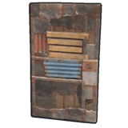
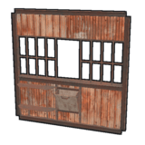

建築関係
| アイコン | 名前 | 修復 | 設置場所 | 詳細 |
|---|---|---|---|---|
| 建築計画書 | × | × | 右クリックで建築メニューを開き、建築が可能。アップグレードにはハンマーが必要 | |
| 工具棚 | 〇 | 平らな建築面 | 建築するうえで非常に大事なアイテム。設置したタンスに登録していない人は建築できない | |
| 錠 | × | ドア | ドアにカギを付けられる。ただし鍵をなくすと面倒。鍵はEキーのメニューを開いて作ることができる。 | |
| コードロック | × | ドア | セキュリティ能力を格段に上げるコードロック。4ケタの数字を入力して登録ができる。失敗するとダメージを負う | |
| 木のはしご | 〇 | 側面 | 壁に梯子をかけて上ることが可能 | |
| 監視塔 | 〇 | 地面 | 梯子を登れば遠くを見張らせることもできたり、外壁の内側に設置して外の敵を監視することも可能 | |
| 木の外壁 | 〇 | 地面 | 建物、採石場などを囲うのに便利ただし、風化があるところでは維持するのが大変 | |
| 木のバリケードカバー | 〇 | 地面 | 木の外壁の簡易版という感じ。突発な戦闘やそれから逃げる時などに役立つ | |
| 木の外壁用ゲート | 〇 | 地面 | 外壁のゲート版コードロックを付けて施錠可能 | |
 |
石の外壁 | 〇 | 地面 | 木の外壁よりも防衛力が高い。だが風化したときの修繕コストが設置枚数に比例する |
| 石の外壁用ゲート | 〇 | 地面 | 非常に大きなゲート。上の有刺鉄線は意味がなく登れる | |
| 小さな採水器 | 〇 | 地面 | 水をためる物。たまったらペットボトルに移せる | |
| 大きな採水器 | 〇 | 地面 | 小さな採水器よりも水を多くためることが可能 | |
| 油井 | × | × | 現在は一部の建造物にしか置いていない。 原油を採取するもの。詳しくは採取に関して→油井で | |
| 採石場 | × | × | 現在は一部の建造物にしか置いていない。 詳しくは採取に関して→採石場で | |
| コンクリートのバリケード | 〇 | 平らなところ | 置き方によっては体を隠すことが可能 | |
| 土嚢のバリケード | 〇 | 平らなところ | コンクリートのバリケードより若干耐久が低い。水は防げない | |
| 石のバリケード | 〇 | 平らなところ | 身を隠すために置いたり足場用として置いたりと用途は様々 | |
| 木のバリケード | 〇 | 平らなところ | 拠点を防ぐために活躍する。爆発系に弱い | |
| 木と有刺鉄線のバリケード | 〇 | 平らなところ | 物の上に置くことも可能なので上からの侵入防止にも使える |
 |
鉄のバリケード | 〇 | 平らなところ | バリケードの中で最も強力。耐久が高く低速ダメージをじわじわとくらう |
| グレーチング床 | 〇 | 床枠 | 下を見ることができる床。大きなかまどを設置するときに必要 | |
| 三角のグレーチング床 | 〇 | 三角の床枠 | 下を見ることができる床 | |
| はしご昇降口付きの床 | 〇 | 床枠 | 部屋の階を直角に上り下りできる梯子付きの昇降口 | |
| 三角のはしご昇降口付きの床 | 〇 | 三角の床枠 | 部屋の階を直角に上り下りできる梯子付きの昇降口 | |
| 木のドア | 〇 | ドアウェイ | 木で作られたドア | |
|  | 板金のドア | 〇 | ドアウェイ | 金属片でできたドア |
| 装甲板のドア | 〇 | ドアウェイ | 非常に硬いドア | |
| 木の両開きドア | 〇 | 壁枠 | 木でできた両開きのドア | |
| 板金の両開きドア | 〇 | 壁枠 | 金属片でできた両開きのドア | |
| 装甲板の両開きドア | 〇 | 壁枠 | 装甲板なのに上質な金属を必要としないので通常はこっちを使。 | |
| ドアクローザ | × | ドア | 開いたドアを自動で閉めてくれる設置物 | |
| ガレージシャッター | 〇 | 壁枠 | 上下に開閉できるドア。車と合わせれば車庫ができる | |
| 店頭カウンター | 〇 | 壁枠 | いらっしゃいませー！ | |
|  | 板金の店頭カウンター | 〇 | 壁枠 | 上記のと違ってちゃんと取引ができる店頭カウンターで防弾ガラス製。内側の人が承認すれば取引ができる |
| 金網のフェンス | 〇 | 壁枠 | 向こう側が見えるが銃弾は貫通する | |
| 金網のフェンスゲート | 〇 | 壁枠 | 金網製のフェンスゲート | |
| 檻の鉄格子 | 〇 | 壁枠 | 罪人をぶち込むのに最適 | |
| 檻のゲート | 〇 | 壁枠 | 唯一横にスライドするドアの為出入りが容易 | |
| ネット | × | 壁枠 | 設置すれば上ることができる。しかし裏側は登れない | |
| 木のシャッター | 〇 | 窓 | 唯一窓を開け閉めができるドア。 | |
| 垂直方向の銃眼 | 〇 | 窓 | 縦方向から覗くことができる。 | |
 |
水平方向の銃眼 | 〇 | 窓 | 横方向から覗くことができる。 |
| 木の窓格子 | 〇 | 窓 | 木でできているためあっさりと壊されてしまう。 | |
| 金属の窓格子 | 〇 | 窓 | 敵の侵入を防ぐのに最適。 | |
| 補強窓ガラス | 〇 | 窓 | 視認性が悪くなるが銃弾が飛んでくるのをそれなりに防げる。 | |
| 強化ガラスの窓 | 〇 | 窓 | 安心して窓の外を眺めることが可能 | |
| 高い氷の壁 | 〇 | 平地 | 大きな氷の壁。しかし性能、修理費は石の外壁とまったく同じ | |
| 低い氷の壁 | 〇 | 平地 | 通常より低い氷の壁。耐久はやや低いが石の外壁と性能はほぼ同じ |